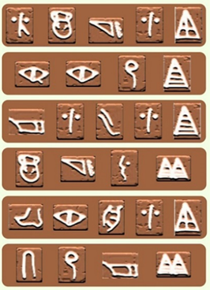
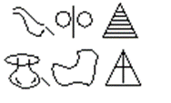
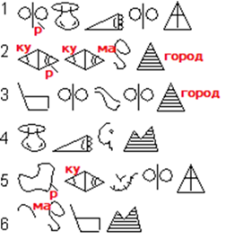
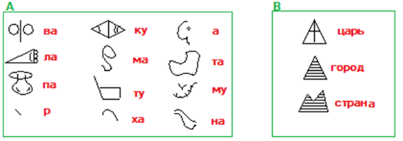
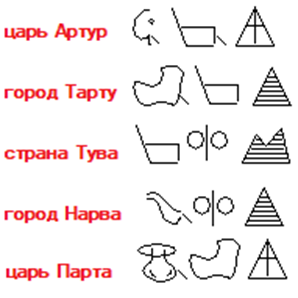

Лекция 51. Понимание незнакомого текста – построение модели. Понимать смысл – дешифровать текст
Зададимся вопросом, как мозг понимает текст на незнакомом языке. Текст субъекту понятен, если субъект может отвечать на вопросы по тексту. Ответ на вопрос – решение
задачи на модели текста.
Чтобы уметь решать задачи (понимать смысл прочитанного), надо составить модель языка, а затем ею воспользоваться.
Упражнение 6
На территория современной Турции найдены 6 табличек с текстом на языке хеттов. Известно, что на этих шести табличках есть названия двух стран: Хамату и Палаа, двух
городов Куркума и Туванава, имена двух царей: Варпалава и Таркумува.


Текстовые сообщения хеттов. Постройте модель.
Решите прямую задачу, переведя на русский язык. Решите обратную задачу, переведя на язык хеттов: «царь Артур» - … , «город Тарту» - … , «страна Тува» - …
То есть, говоря научным языком, дана неполная билингва. Надо определить, где какая надпись, установив полное соответствие слов хеттского и русского языка. То есть стоит задача расшифровки языка (в пределах предъявленных фрагментов), построение его модели и последующего перевода новых языковых конструкций с использованием построенной модели.
Модель описывает состав (словарь) и структуру (грамматику) языка, представляя элементы и связи системы языка. На основании полученной модели надо решить прямую задачу, переведя с хеттского на русский язык, и обратную, переведя на хеттский язык надписи на русском языке.
Успешное решение прямой и обратной задач с новыми данными доказывает, что построена именно модель, обладающая прогностическими свойствами.
Если в системе есть закономерность, то её можно найти научными методами, прежде всего анализом сходств и различий фрагментов. Можно заметить, что последние знаки на
табличках хеттов повторяются и каждый из них встречается два раза. Среди шести понятий фигурируют два царя, два города и две страны. Отсюда можно выдвинуть гипотезу о
том, что последние знаки в словах - служебные и означают отношение некоего понятия к городу, стране или царю.
Предполагаем, что оставшиеся символы иллюстрируют либо буквы, либо, что более правдоподобно, их сочетания, так как длина данных нам слов на русском языке больше, нежели в представленной письменности.
Сосчитаем количество знаков в каждом из зашифрованных слов на хеттском зыке и на русском. Получим: 5,4,5,4,5,4 – у хеттов. В русском тексте считаем количество
букв, слогов, слов в каждом фрагменте. В результате подсчёта можно сделать вывод о том, что количество слогов в словах и знаков в понятиях хеттов отличается на единицу
(один служебный знак). Значит, язык хеттов предположительно - слоговый.
Так как некоторые понятия имеют повторяющиеся сочетания букв в словах, логичнее начать с рассмотрения таблички 2: наличие повторяющихся картинок с различием в
одну черту позволяет предположить, что в переводе также будут присутствовать повторяющиеся слоги. Табличка 1 тоже имеет повтор в первом и последнем элементах.
Проанализировав знаки и слоги, которые повторяются в двух расшифрованных словах, можно сделать вывод о том, какой знак обозначает слог «ва», какой - «ку». В словах
(Куркума и Варпалава) встречается буква «р», так же, как и в зашифрованных словах встречается значок черточки. Служебные знаки и табличек, и русских словосочетаний
тоже различаются - первоначальная гипотеза продолжает подтверждаться. Ставим в соответствие второй табличке город Куркума и переносим уже известные расшифровки на
другие слова-таблички.

Расшифровка названия первого города и перенос гипотезы на другие таблички
Аналогично продолжаем далее расшифровку в рамках расширения выдвинутой гипотезы. Если встретится противоречие, то гипотезу придётся отвергнуть, выдвинуть новую и всё повторить с самого начала до момента, когда гипотеза полностью подтвердится, а текст будет расшифрован. Дешифровка напоминает распутывание клубка, где важно найти кончик ниточки, с которого можно начать.
Если все символы по цепочке расшифрованы, выписываем словарь, содержащий два вида элементов А и В.

Словарь языка хеттов
Рассмотрим грамматику языка. Видно, что сначала всегда формируется слово из группы символов А (минимум из одного), а затем присоединяется один символ
из группы В. В итоге получаем следующую формулу в нотации Бэкуса-Наура:
Q ::= {A} | {A}Q | Q{A} (грамматика языка хеттов)
S ::= Q{B} .
Читается так: цепочка символов Q — это символ из множества A или символ из A слева от цепочки Q или символ A справа от цепочки
Q. {A} — один из элементов набора A. Фраза S — это цепочка символов Q, оканчивающаяся элементом из множества B.
Теперь наша модель языка готова и состоит из словаря и грамматики, и мы можем, используя ее, формировать новые слова хеттского языка самостоятельно, то есть решать задачи.

Запомните: язык – это система, система – это элементы и связи, элементы – это словарь языка, связи – грамматика языка.
Модель языка – это словарь и грамматика. Построив модель языка, имея словарь и грамматику языка, можно решать прямые и обратные задачи. Если модель неточна, то у задач может быть несколько решений. Модель неточна, если для её построения было использовано мало примеров или они подобраны неудачно.
Модель считается построенной, если она позволяет решать прямые и обратные задачи, отвечая на поставленные вопросы в пределах представленной информации.
Задания
Составьте модель (словарь и грамматику) венгерского языка (в пределах представленного фрагмента). Дана неполная билингва «русский – венгерский»: {nyi’rfa, korte, alma’k, kortefa, nyirfa’k, alma, almafa} - {груша, яблоко, береза, яблоня, березы, яблоки}. Используя построенную модель, решите задачу: kortek - ?, яблони - ?. (Примечание: 7 слов по-венгерски и 6 слов по-русски - это не ошибка).
Рекомендация. Составьте граф слов русского языка и слов венгерского (из примера), наложите их друг на друга. Вершины графа – слова текста, связи вершин – расстояние R=1 между словами.
Граф венгерского языка – грамматический, так как смысла венгерских слов мы не знаем, но можем ориентироваться по формальному их написанию. Следует определить сходство и различие между грамматическими формами. Там, где оно минимально, то есть надписи отличаются друг от друга на одну позицию, элементы графа соединяем. Например, nyi’rfa и nyirfa’k. Граф русского языка – лексический. Здесь соединяем элементы между собой, ориентируясь на смысл. Соединяем элементы, отличающиеся друг от друга на единицу смысла. Например, «яблоко» и «яблоки». После того как графы построены, накладываем их друг на друга так, чтобы они совпали топологически и выписываем ответ.
Обратите внимание, если бы графы имели симметрию, то задача бы решалась неоднозначно. Говорят – имела бы два и более корней. Однозначной расшифровке поддаются несимметричные задачи.
Примечание: можно также описать замены звуков. Видимо, после согласных в языке банту принято делать замену первой буквы корня с глухой на звонкую (озвончивать), после гласных – смягчать (глушить).
На модели спрогнозируем новые данные. Возможность прогноза доказывает, что мы построили именно модель: uthathi → сок кустарника (прямая задача),
лист фигового дерева ← ikuyu (обратная задача).
Указание. Разглядывая таблицу, поразмышляйте над тем, сколько минимально ячеек таблицы надо открыть, чтобы решить задачу (выявить закономерность). Сообразите, в какой взаимной позиции они должны быть между собой, чтобы задача решалась однозначно. Составьте алгоритм искусственного интеллекта, строящий модель языка.
Задания
Составьте по примерам модель (словарь и грамматику) языка Муйув (австронезийский, Папуа-Новая Гвинея) и переведите на русский язык новые фразы:
asin, itom, ak, ты уходишь. Известно: atok – я стою около него, kuton – ты стоишь в стороне, isiw – он остаётся около тебя, kusim – ты остаёшься около
меня, iw – он идёт к тебе.